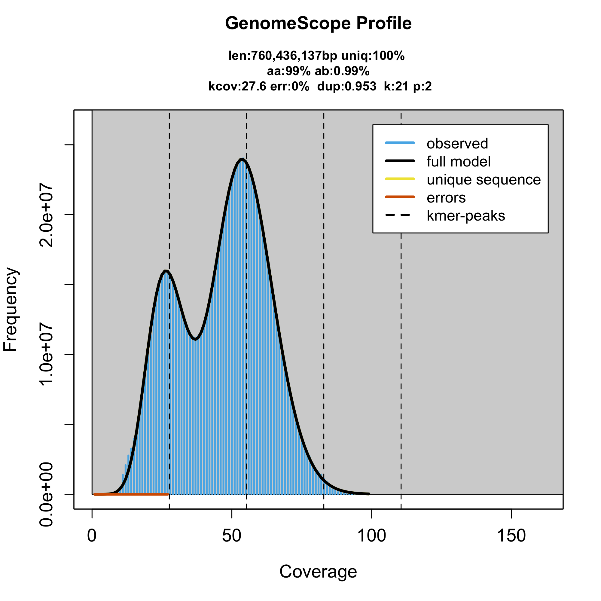

Basicamente, rodei dois softwares hoje. Um para indentificar os fragmentos da minha sequencia (Hifiasm) Ele me devolve numeros de contig (quanto menor melhor) que é o numero de fragmentos soltos. O programa tenta unir sequencias sobrepostas, com isso tenho um numero que funciona como minha mediana esse numero é chamado de N-50. Basicamente é um valor numerico que separa o tamanho das minhas sequencias de DNA. Ele é inversamente proporcional ao meu numero de CONTIGS. Ou seja, quando meu numero de contigs é alto, meu numero N-50 será menor.

hifiasm -o andropogon.asmJM -t10 --telo-m TTTAGGG\
/st100/acgt/projetos/genfor/andropogon/in_data/pacbio/BRS_Sarandi_1/PACBIO_DATA/fastq/XMPBA_20250523_R84050_PL21312-001_1-1-B01.hifi_reads.filt.fastq.gz\
/st100/acgt/projetos/genfor/andropogon/in_data/pacbio/BRS_Sarandi_1/PACBIO_DATA/fastq/XMPBA_20250604_R84050_PL21312-001_1-1-B01.hifi_reads.filt.fastq.gz 2\> asm01.logOs parametros desse código dependem do servidor que você tiver trabalhando no meu caso usei -t10 (Usei 10 nucleos do processor da matriz do servidor). Outro parametro é o –telo-m TTTAGGG identificando meus telomeros (Extremidades do cromossomo). O andropogon.asmJM é o output que eu coloquei para meus arquivos resultantes do processo. O resto do codigo é apenas o caminho dos diretorios onde se encontram meus .fastq do sequenciamento. Posteriormente transformei esse código em um arquivo .sh (executável), para posteriormente passar ele pelo nohup. Bash
nohup sh runMeHifiasm.sh &O nohup basicamente funciona como uma especie de host, faço uma maquina externa (no meu caso a maquina matriz), rodar o código, liberando meu terminal e fazendo com que a minha máquina de trabalho possa ser desligada, enquanto o código continua rodando na matriz. (obs: as vezes levam semanas pra software te entregar o resultado).
O genomescope2 serve pra eu ter estimativas de tamanho do meu genoma e ploídias. Onde as frequências k-mer dentro das leituras de sequenciamento são analisadas para estimar eficientemente as principais características do genoma, como tamanho do genoma, heterozigosidade e repetitividade.
O KMC, é a primeira parte da ánalise necessaria para o trabalho do genomescope, esse software basicamente conta o numero de k-meres(regiões repetitivas do genoma). Bash
kmc -k21 -t10 -m64 -ci1 -cs1000000 @lista_fastqsANDROPOGON.txt reads tmp/
Stage 1: 100%
Stage 2: 100%
1st stage: 640.204s
2nd stage: 784.064s
Total : 1424.27s
Tmp size : 310806MB
Stats:
No. of k-mers below min. threshold : 0
No. of k-mers above max. threshold : 0
No. of unique k-mers : 3943444853
No. of unique counted k-mers : 3943444853
Total no. of k-mers : 261304727485
Total no. of reads : 11954295
Total no. of super-k-mers : 37576618091Agora sim, vamos com esses dados prontos vamos rodar o genomescope2. Para termos histogramas e graficos pra termos um visual do tamanho do genoma e dessas regiões repetitivas.
genomescope.R -i reads.histo -o output -k 21Sobre os gráficos, pensei em colocar no notebook, mas acredito que não seja possivel por causa das diretrizes de confiabilidade da EMBRAPA. Então, basicamente é isso, uma etapa longa e cheia de processos e arquivos intermediarios.
<style>
/* --- OVERRIDE FINAL E BRUTAL (SÓ PARA ESTE POST) --- */
/* Ataca todos os possíveis wrappers de saída de código (divs, figures, etc.) */
.cell-output,
.cell-output > div,
.quarto-figure {
max-width: 100% !important; /* Máxima prioridade para caber */
overflow-x: auto !important; /* Adiciona rolagem se a largura for muito grande */
box-sizing: border-box !important;
padding: 0 !important; /* Remove qualquer padding que esteja forçando o estouro */
}
/* Ataca a imagem, o SVG, e o Canvas que o R gera */
.cell-output img,
.cell-output svg,
.cell-output canvas {
max-width: 100% !important;
height: auto;
display: block;
margin: 0 auto; /* Centraliza a imagem/gráfico */
}
</style>